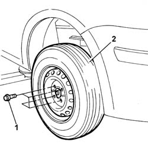

4450B12 front or rear wheels (two) - r+r
- Path
- Procedures > 44 SUSPENSION AND WHEELS > 4450 HUBS AND WHEELS > 4450B wheels and components > 4450B12 front or rear wheels (two) - r+r
- Kind
- repair procedure (removal / refitting; the operation number is the code)
- Applies to
- all engines; all production periods
- Interactive page
- https://sloeber94.github.io/elrnDB-fPnd/en/#/2752829
Applies to: all engines; all production periods
 Removing
Removing
 Refitting
RefittingPlace the car on a ramp.
For wheels with steel rims, remove the wheel hub caps.
With the wheels resting on the ground, loosen the bolts fixing the front wheels.
Raise the lift.
1. Completely undo the bolts fixing the two wheels.
2. Remove the two front wheels with steel or alloy rims.

Applies to: all engines; all production periods
Refitting
RemovingFit the wheels and secure them without tightening the bolts.
Lower the vehicle until the wheels are touching the ground.
Tighten the bolts fixing the steel rimmed wheels to the recommended torque.
 | Fastening | Component | Ø | Value (daNm) |
|---|---|---|---|---|
- | Bolt | FRONT WHEEL FIXING BOLT | M12 x 1.25 | (Steel rim) 8.6 |
Tighten the alloy rimmed wheel bolts to the recommended torque.
| Fastening | Component | Ø | Value (daNm) |
|---|---|---|---|---|
- | Bolt | FRONT WHEEL FIXING BOLT | M12 x 1.25 | (Alloy rim) 9.8 |
For steel rimmed wheels, fit the hub caps.
Remove the vehicle from the lift.
Topics that link to this page (23)
- S27 REAR SUSPENSION NOISE (WHISTLE/HUM)
- 1020D38 flywheel side oil seal - replace
- 1024B12 engine flywheels rr for versions with manual gearbox and air contioner
- 1024B13 ENGINE FLYWHEEL - R.R. FOR MODELS WITH MECHANIC TRANSMISSION AND FOUR-WHEEL DRIVE
- 1810A20 clutch - r + r
- 1810A30 CLUTCH - R.R. FOR FOUR-WHEEL DRIVE MODELS
- 1820A19 THRUST BEARING CONTROL LEVERAGE - R.R. FOR FOUR-WHEEL DRIVE MODELS
- 2110A10 manual gearbox and differential - r + r
- 2110A16 MECHANICAL GEAR WITH DIFFERENTIAL - R.R. FOR 4X4 VERSIONS
- 3310A60 front brake pads - replace
- 3340A48 wheel rpm sensors (four) - r r
- 4110B10 steering links - r+r on vehicle - check tow-in/tow-out separately
- 4120A10 steering box - r+r - check wheel tow-in if necessary separately
- 4410c10 front suspension stabilizer bar - r+r - check wheel geometry separately
- 4410D13 front suspension beam - r r
- 4450B13 rear wheels(2) r r
- 4450B14 wheels (four) - r+r
- 5050D13 HEADLAMP WASHER SYSTEM TYPES AND FITTINGS - R R
- 5505A90 rear wiring bundle - r r or replace
- 5505C26 bonnet wiring - r r
- 5540B14 front headlamp unit (one) lh or rh - r r
- 5540B87 RIGHT HEADLAMP SUPPORT - R.R. WITH HEADLAMP REMOVED
- 7210E10 R.R. FRONT BUMPER